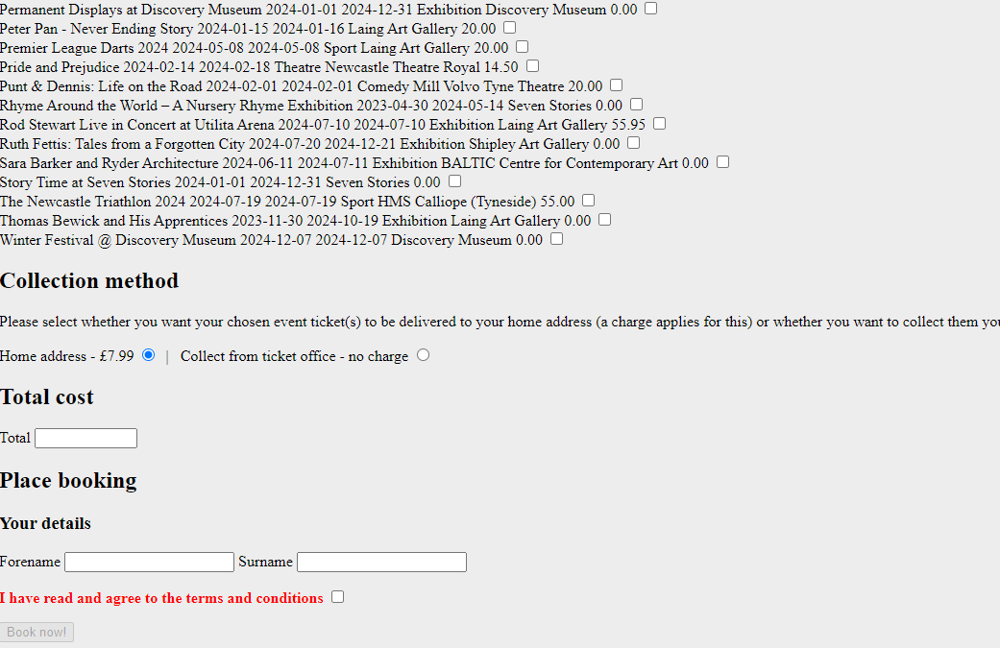
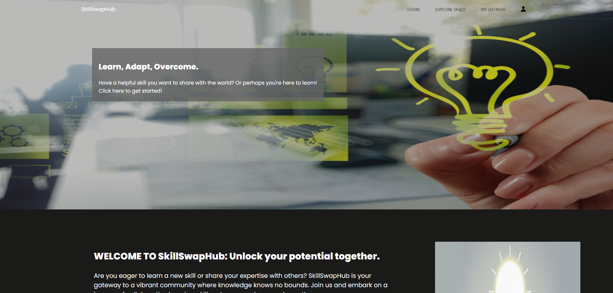
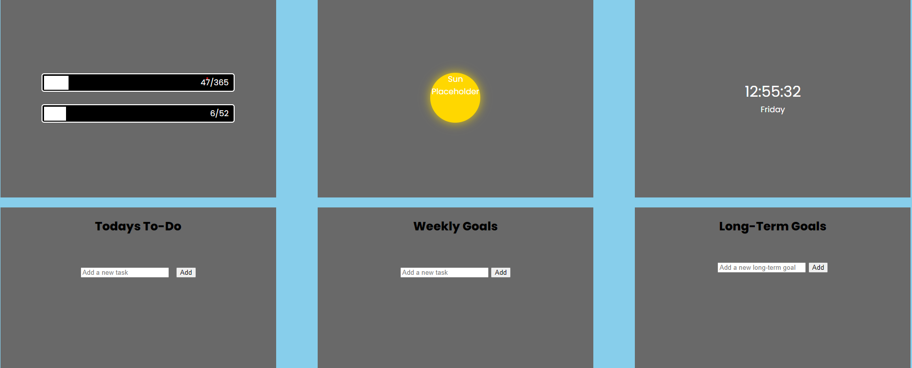

This website was created from scratch. Feel free to look around. View code for this page.Portfolio Page
Events guide North (University Project)

Backend DevelopmentPHP/PDO/SQL
Implemented Administrator Functionality:
Developed a dynamic PHP, PDO, and SQL-based feature for administrators to edit event details stored in a database table.
Created a user-friendly interface allowing administrators to choose an event from a dynamically generated list.
Implemented a form for editing event details, including server-side data validation and safety measures to ensure data integrity.
Restricted display of system attributes from the user interface.
Implemented User Login:
Designed a login facility with a form accessible on every site page for non-logged-in users, featuring a consistent location for user convenience.
Integrated a logout mechanism for logged-in users in the same location.
Utilized PHP, PDO, and SQL to validate user credentials against records a table.
Employed sessions to control access to administrator functionality base on successful login.
Ensured Server-Side Data Validation and Security:
Implemented server-side PHP validation for user-entered data, checking for validity and appropriate data types, lengths, etc.
SkillShareHub Landing Page

Frontend Development HTML/CSS Contributed as the front-end developer, in which I lead development for the website landing page. My role involved transforming design concepts into a HTML and CSS interface to fit design criteria for a customer request through freelance wesbtie fiverr.com
SkillShareHub Landing Page

Backend + Frontend Development HTML/CSS/JS Personal Project - Javascript showcase - Created a website to showcase javascript based skills. Contains three working to do lists, with ability to store data locally. Entries can be deleted, marked as complete and more can be added with a push of a button. The website also makes use of scripts to track time, track days/weeks of the year and update boxes accordingly.